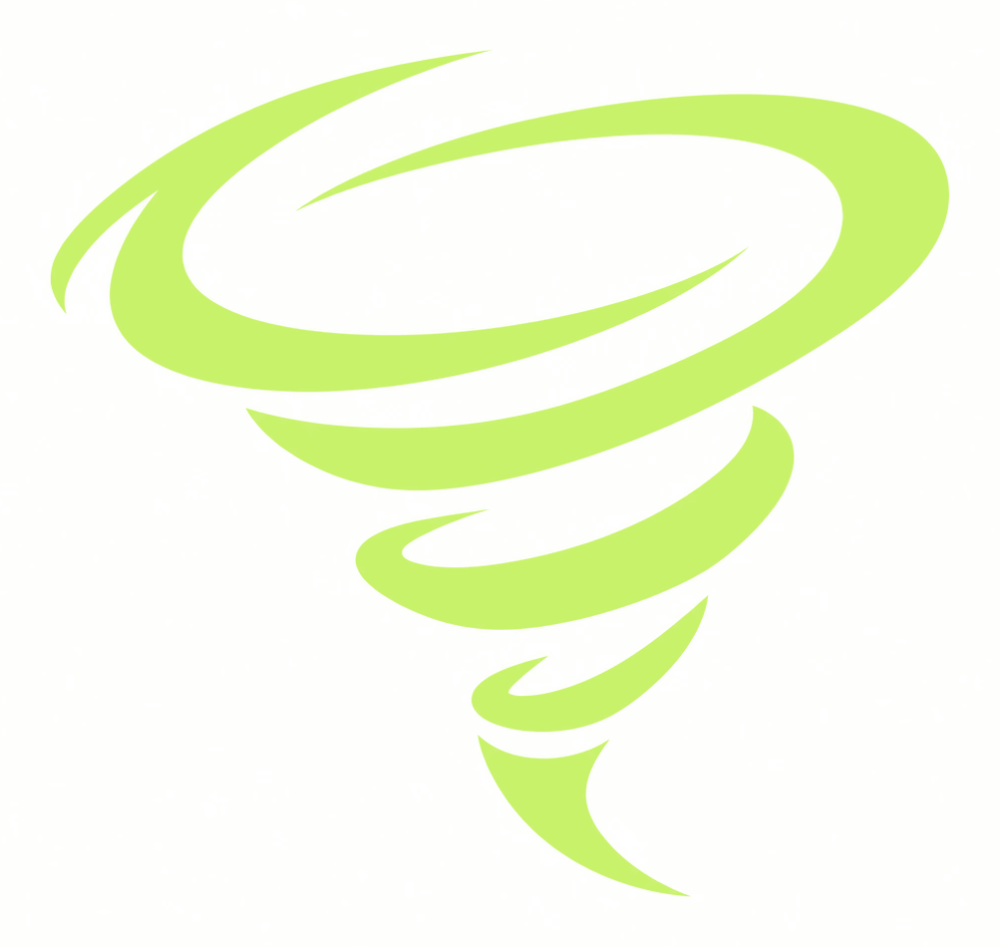
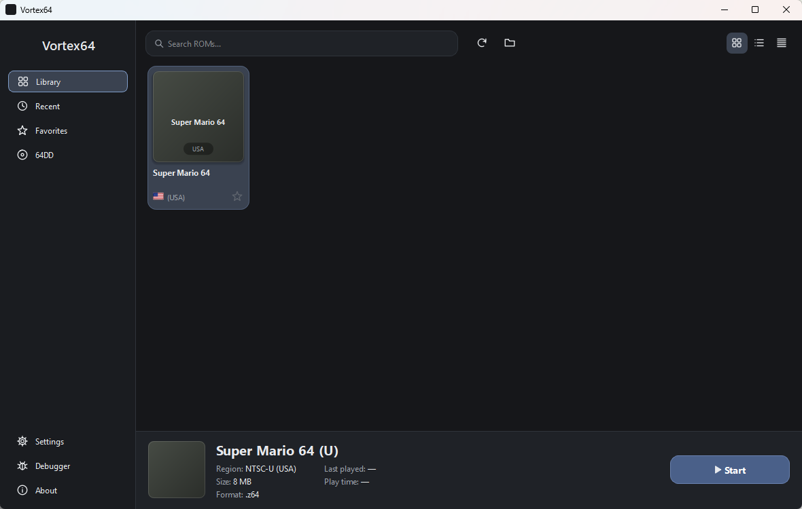
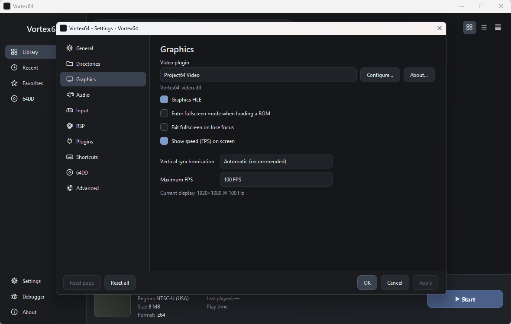

Núcleo MIPS R4300i con JIT
Intérprete y recompilador JIT x64, verificado contra el intérprete con miles de programas aleatorios.


VORTEX64Vortex64 es un emulador de Nintendo 64 nativo, con recompilador JIT, plugin de vídeo GLideN64 y una interfaz moderna hecha con Qt 6. Sin Wine, sin capas, sin ruido.



Intérprete y recompilador JIT x64, verificado contra el intérprete con miles de programas aleatorios.
Plugin propio OpenGL/SDL2 embebido en la ventana y el binario oficial de GLideN64 en el paquete.
EEPROM, SRAM y Flash, además de save states con ranuras.
Biblioteca, favoritos, recientes, pantalla completa y ajustes claros.
Audio y entrada por SDL2, con configuración de controles.
Ventanas de depuración y scripting con acceso a sistema de archivos, procesos, sockets y temporizadores.
Explora las pantallas reales de Vortex64.


Capturas reales de Vortex64 en Windows ejecutando Super Mario 64 (USA). Toca una para ampliarla.
Baja Vortex64-Windows-x64.zip (o la AppImage de Linux) con el botón de descarga.
Es portable: ponlo donde quieras. El runtime de Visual C++ ya va incluido.
Abre vortex64.exe, añade tu carpeta de ROMs y pulsa Start.
vortex64-cli.exe "C:\ruta\juego.z64" --recompiler
Usa --interpreter en lugar de --recompiler si quieres el intérprete. Tus ajustes se guardan en %APPDATA%\vortex64.
Vortex64 no incluye ROMs ni contenido de Nintendo. Necesitas tus propias copias.
Elige tu plataforma. Descomprime, ejecuta vortex64.exe y listo: el runtime de Visual C++ ya va incluido.
La disponibilidad de compilaciones y funciones puede cambiar mientras continúa el desarrollo.